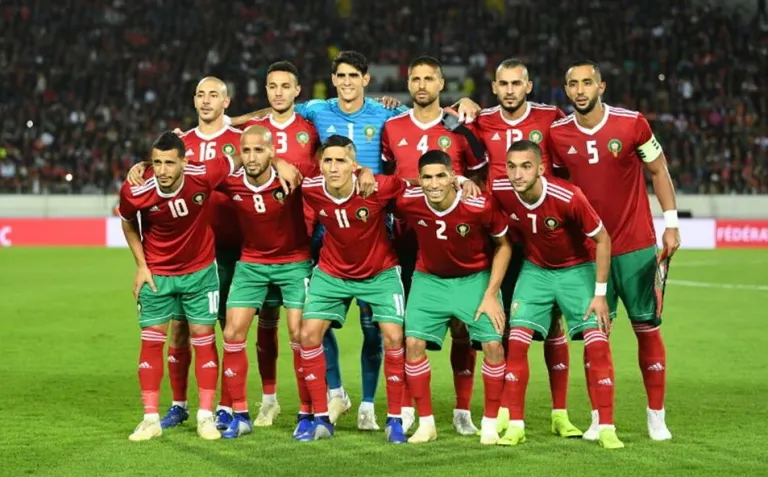

COPAS QUE JÁ PARTICIPOU:
A seleção mexicana participou de sua 16ª edição da Copa do Mundo de futebol em 2018. Em 2022 Fará sua 17° participação na edição que será no Catar/Qatar

PREMIAÇÕES QUE JÁ ALCANÇOU
Os melhores desempenhos da seleção mexicana foram em 1970 e 1986 quando o México chegou às quartas-de-final.
NOME DO TÉCNICO:
Geraldo Martino
PRINCIPAIS JOGADORES
Raúl Jiménez
Vega
Lozano
Tabela de jogos
| Data/Hora | Estádio | Adversário |
|---|---|---|
| 22 nov 2022 / 19h00 | Estádio 974 (Estádio Ras Abu Aboud) | Polônia |
| 26 nov 2022 / 22h00 | Estádio Nacional de Lusail | Argentina |
| 2 dez 2022 / 22h00 | Estádio Nacional Lusail | Arábia Saudita |